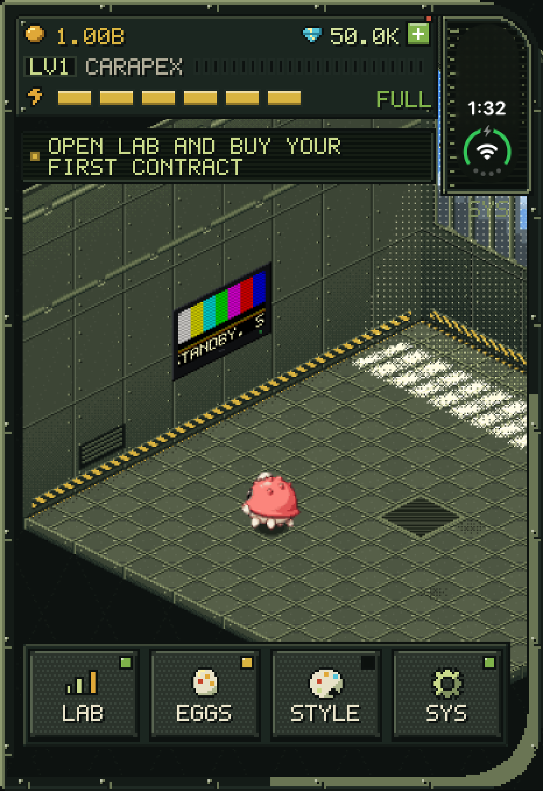

Daily missions
Three missions a day, one each for destroying, skill and combat, drawn from a pool of 28. Finish them for rewards, and a fresh set arrives the next day.
In development
Raise a kaiju folded. Wreck a city unfolded.


A pixel-art kaiju collector. Hatch monsters from eggs and build up an idle lab on the folded screen, then unfold the phone, or tap SMASH, to send a kaiju through a city and flatten as much of it as it can.
Hatch eggs, collect earnings and check on your kaiju in a riveted isometric lab.
Take a kaiju into a city for a timed smash round on the full display.
Three missions a day, one each for destroying, skill and combat, drawn from a pool of 28. Finish them for rewards, and a fresh set arrives the next day.
The launch roster is ten kaiju, all of them hatching from eggs, each with its own moves and forms.
Downtown, the snowy Frostmoor and the desert Sunscar Basin. Only Downtown is open at first, and beating a city's boss opens the next.
There's no hunger, cleaning or starving in Hatch & Smash. Your kaiju simply looks a bit sadder the longer you're away, and a single visit cheers it up. Nothing you've earned is ever taken back.